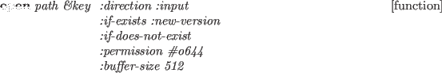

Echo-streams and concatenated-streams are not available.
Predefined streams are following:
- *standard-input*
- stdin fd=0
- *standard-output*
- stdout fd=1
- *error-output*
- stderr fd=2 bufsize=1
- *terminal-io*
- two-way stream made of
*standard-input* and *standard-output*
streamp object [function]
-
-
Any object created from stream, io-stream,
or their subclasses returns T.
input-stream-p object [function]
-
-
T if object is a stream and capable of reading.
output-stream-p object [function]
-
-
T if object is a stream and capable of writing.
io-stream-p object [function]
-
-
T if object is a two-way stream.

-
- Open makes a stream associated with a file designated by path.
path may either be a string or a pathname.
Direction should be one of :input, :output or :io.
Several open options, :append, :new-version, :overwrite, :error
and nil are allowed for :if-exists parameter.
However, this parameter is ignored when direction is :input.
Alternatives for :if-does-not-exist are
:error, :create and nil.
:new-version, :rename and :supersede
are not recognized.
By default, the file is overwritten if direction is either
:output or :io when the file exists.
For :input files, an error is reported when the file does not exist.
To know the existence of a file, probe-file can be used.
Default value for buffer-size is 512 bytes,
and #O644 for :permission.
SunOS4 allows to open as many as sixty files at the same time.
with-open-file (svar path . open-options) &rest forms [macro]
-
-
A file named path is opened with open-options and the
stream is bound to svar.
Then forms are evaluated.
The stream is automatically closed when evaluation of forms finishes
or exits with throw, return-from or error.
With-open-file is a macro defined by unwind-protect with close
in its clean-up forms.
close stream [function]
-
- closes the stream, and returns T if successful.
The stream may have already been closed, in which case nil is returned.
Streams are automatically closed by GC if there is no reference to
that stream object.
make-string-input-stream string [function]
-
-
makes an input stream from a string.
make-string-output-stream size [function]
-
-
makes an output stream to a string of size length.
Actually, the length is automatically expanded, so size is only
advisory information to allocate string at initialization.
get-output-stream-string string-stream [function]
-
-
gets a string out of a string-stream.
make-broadcast-stream &rest output-streams [function]
-
-
makes a broad-cast stream which forwards all the messages written to
this stream to each of output-streams.
2016-03-23